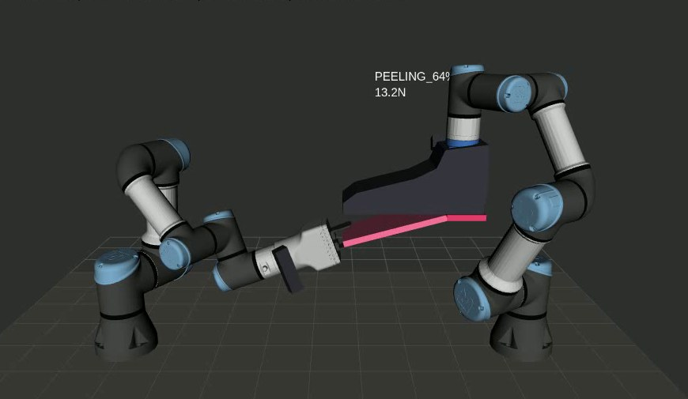
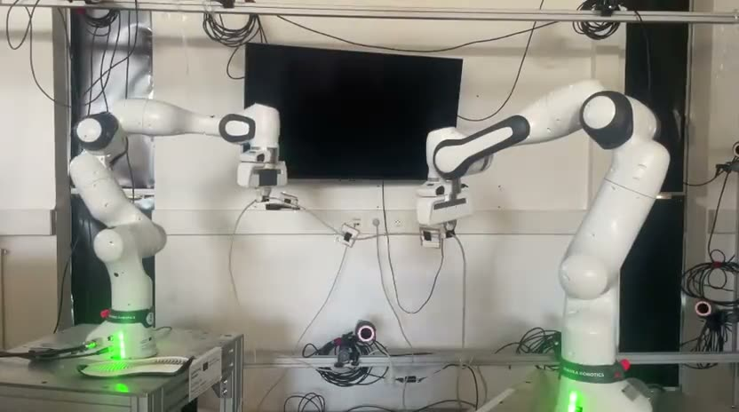
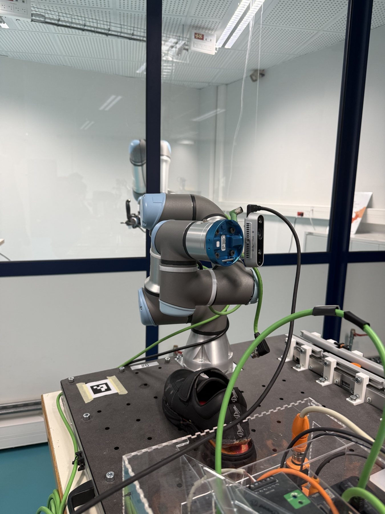

P1 · REMAIN · Pair project


In progress
Oct 2026 – Feb 2027 · Sigma Clermont
P2 · Research internship
Automated robotic force measurement for recycled shoes
One UR3e holds the shoe on a custom 3D-printed shoe tree while the other peels the sole off, measuring the separation force and recording a labelled dataset for every pull.
Open folder
May – Sep 2026 · Institut Pascal
P3 · Team lead
Detecting singularities in dual-arm cable manipulation
Closed-loop shape servoing on two Franka FR3 arms, and SVD diagnostics that detect when shape control is about to break down, directly from experimental data. Shape error fell by 85–99% across 8 hardware runs.
Open folder
2025 – 2026 · REMAIN-SUDOE
P4 · Team project
Autonomous shoe inspection on a UR3e
Led an 8-person team that took a defect-inspection pipeline from Gazebo to a real UR3e: calibration, depth-based localisation, visual servoing, motion planning and a two-stage CNN.
Open folder
2025 – 2026 · Sigma Clermont
Teaching a TurtleBot3 to navigate with deep RL
Three RL algorithms implemented from scratch in PyTorch for LiDAR obstacle avoidance. Curriculum learning took DQN from under 20% to 60% success.
Open folder